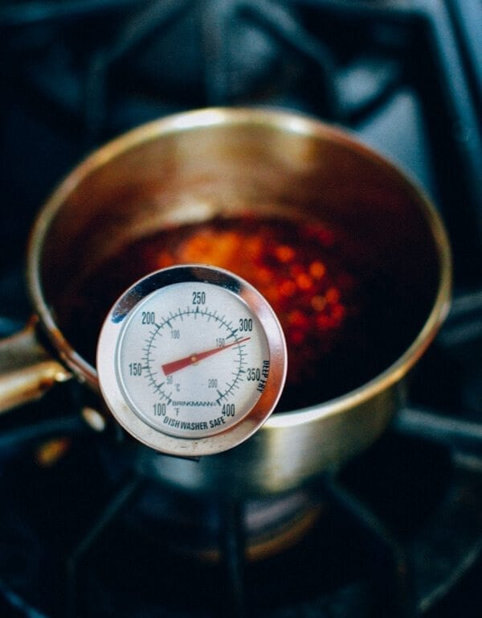
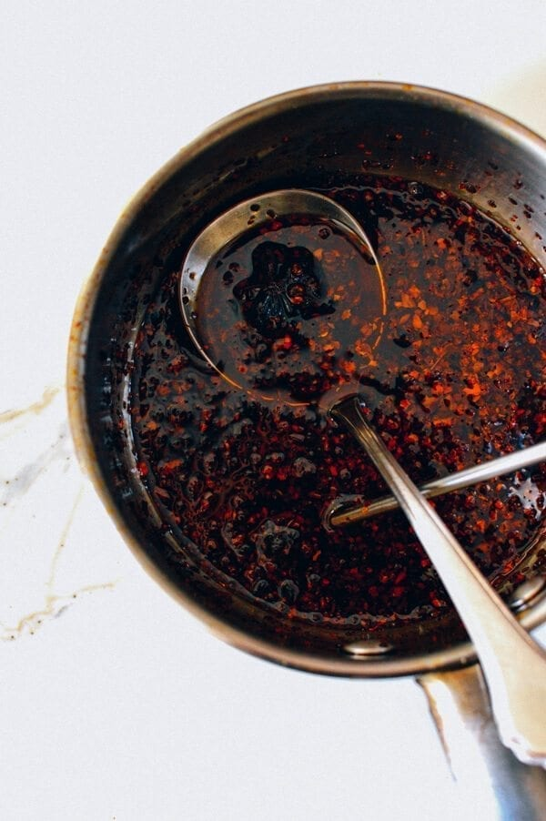
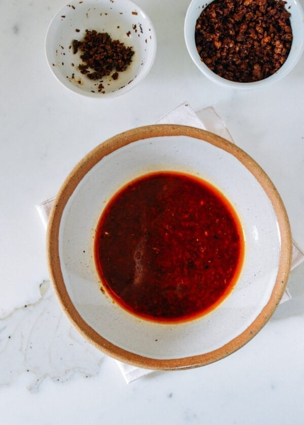
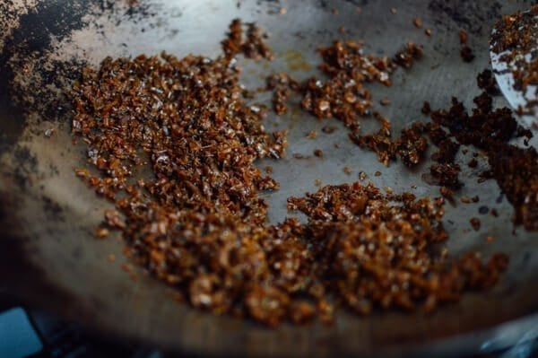
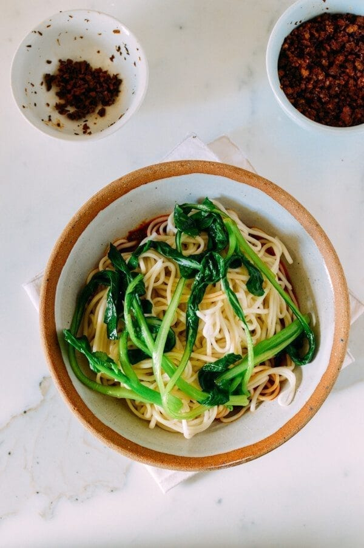
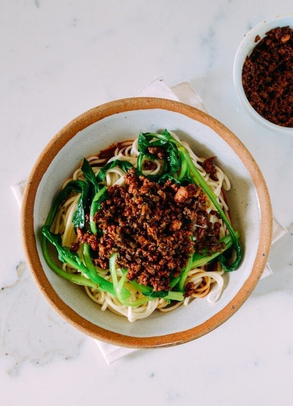
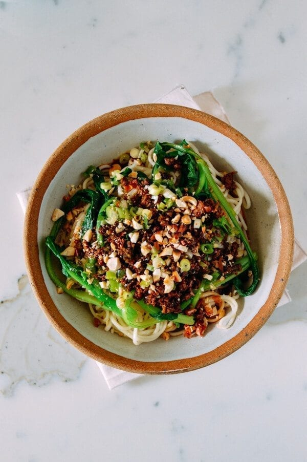

DAN DAN NOODLES (担担面)

Dan Dan Noodles are spicy and nutty flavorful noodles that can be fairly easy to make.
Since the theme is the use of Sichuan peppercorns, this recipe will also have a
delicious Sichuan style heat. This recipe was obtained from The Woks of Life
by Judy.
The Recipe
Chili Oil
Ingredients
- 2 tablespoons Sichuan peppercorns
- 1 inch-long piece of Chinese cinnamon (gui-pi)
- 2 star anise
- 1 cup oil
- 1/4 cup crushed pepper flakes
Steps
- Add the Sichuan peppercorns, cinnamon stick, star anise,
and oil in a small pot.
- Over medium low heat, slowly heat to 325 degrees Fahrenheit
then turn off the heat.

- Wait 6-7 minutes then remove the peppercorns, cinnamon stick,
and star anise.
- Add crushed red pepper flakes in the oil and allow for it to cool.

Meat Mix
Ingredients
- 3 teaspoons oil
- 8 oz. (225g) ground pork
- 2 teaspoons sweet bean sauce or hoisin sauce
- 2 teaspoons shaoxing wine
- 1 teaspoon dark soy sauce
- 1/2 teaspoon five spice powder
- 1/3 cup sui mi ya cai
Steps
- Heat a teaspoon of oil over medium heat and brown the ground pork.

- Add the sweet bean sauce, shaoxing wine, dark soy sauce, and five spice powder.
and cook until all the liquid is evaporated then set aside.
- Heat the remaining 2 teaspoons of oil over medium heat then sautee the sui mi ya cai
for a few minutes then set aside.

Sauce
Ingredients
- 2 tablespoons sesame paste
- 3 tablespoons soy sauce
- 2 teaspoons sugar
- 1/4 teaspoon five spice powder
- 1/2 teaspoon Sichuan peppercorn powder
(Grind peppercorn in a mortar and pestle)
- 1/2 cup of your chili oil
- 2 cloves of garlic, finely minced
- 1/4 cup hot cooking water from the noodles
Steps
- Mix all the ingredients and season to taste.
Noodles, Vegetables, Assembly
Ingredients
- 1 lb fresh or dried white noodles, medium thickness
- 1 small bunch leafy greens (spinach, bok choy, or choy sum)
- chopped peanuts
- chopped scallion (optional)
Steps
- Cook the noodles according to the package instructions and drain.
- Blanch the leafy greens in the noodle water then drain.
- Divide the sauce into 6 bowls (or 4 if you want larger servings).
- Add the noodles.
- Add the leafy greens.

- Add the cooked pork and sui mi ya cai.

- Sprinkle chopped peanuts and scallions over the noodles if you like.

- Mix everything and enjoy!